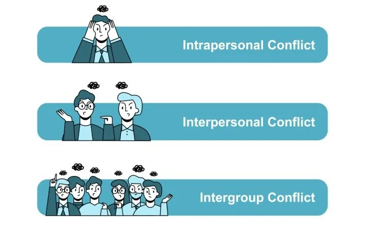
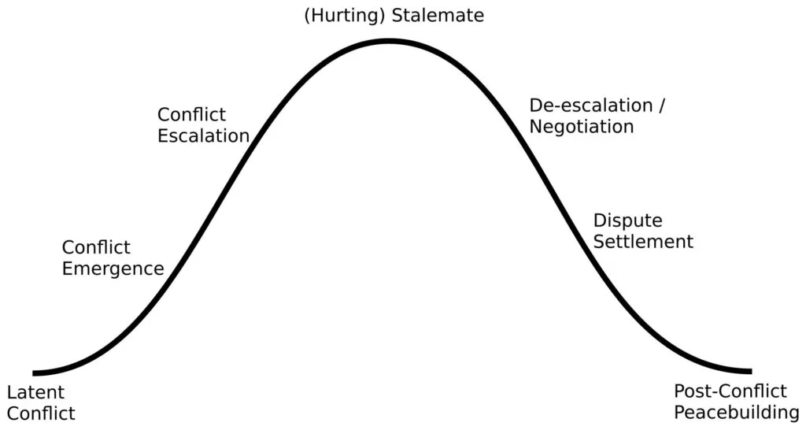
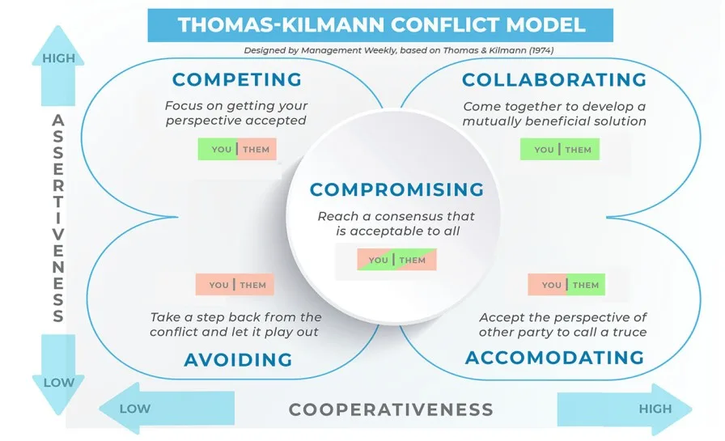
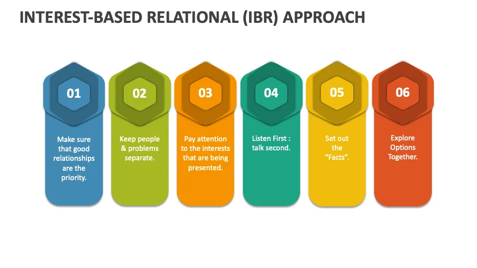
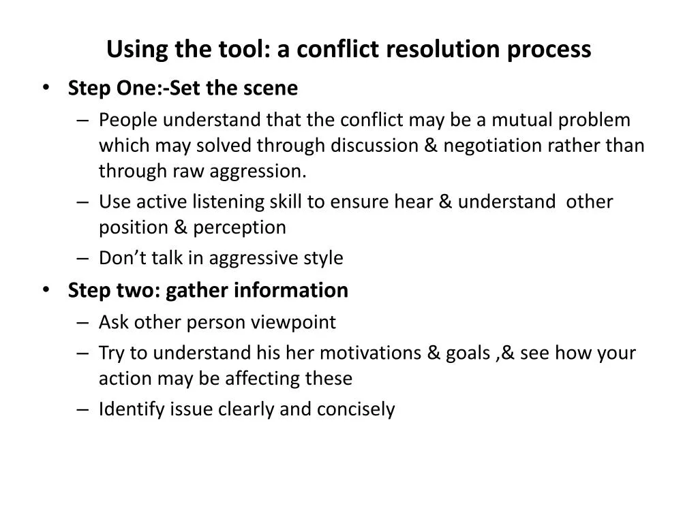

Expanded Nursing Uganda Explanation
Conflict and conflict resolution should be understood beyond a short definition. Link the concept to patient history, focused assessment, common risks, nursing priorities, documentation and evaluation of outcomes.
01 CONFLICT RESOLUTION
A conflict is any discontent or dissatisfaction that affects the organizational performance .
A conflict is a situation when the interests, needs, goals or values of involved parties interfere with one another .
Conflict is defined as the consequence of real or perceived differences in mutually exclusive goals, values, ideas, attitudes, beliefs, feelings or actions.
A conflict is not the same as a problem. It only becomes a problem after failing to resolve it.
02 Types/Levels of conflicts
- Intrapersonal /personal conflict : This conflict occurs within us. They occur when we are not happy with ourselves or when we are torn between choices we need to make or when we are frustrated with our goals/accomplishments. These conflicts often lead to conflict with others.
- Interpersonal conflict : This conflict happens between 2 or more people with differing values, goals and beliefs. Most common type of conflict . Interpersonal conflicts usually arise in the workplace due to natural differences in human personality, human needs, beliefs or work ethics. Has a tendency of resolving itself because conflicting parties are not able to continue in a tense situation for a long time (hence time is a healing factor).
- Social / inter group conflict : This conflict happens between 2 or more groups of people. These could be departments or organizations.
03 General causes of conflicts
- Communication : In hospitals, conflicts often arise due to unclear, infrequent or ineffective communication, can lead to misunderstandings, frustration. This can manifest through lack of feedback, misunderstandings, withholding information, criticism, etc. For instance, A doctor may not communicate effectively with a nurse about a patient’s care plan, leading to confusion and potential errors.
- Personal causes of conflict: Ego, personal biases, and lack of empathy can contribute to conflicts among healthcare professionals. For example, differences in personalities or perceived disrespect between nurses and physicians may lead to friction.
- Process causes of conflict: Disagreements about how things should be done can lead to conflict For instance, Two nurses may disagree on the best way to manage a patient’s pain, leading to a heated debate and delayed treatment.
- Preferred methods : Healthcare professionals may clash over their preferred methods of performing clinical procedures or administering patient care. Individuals may believe their way of doing things is superior and insist others follow their methods For instance, A senior doctor may insist on using a specific surgical technique, even though newer, more efficient methods are available.
- Sharing or scarcity of resources : Limited resources, such as personnel, budgets, and medical equipment, competition and conflict can arise. For example, Two departments may compete for the same operating room time, leading to delays and frustration for both teams.
- Personality style differences : Differences in personality like Introverts vs. extroverts, Judgers vs. perceivers, values, attitudes, needs, expectations, perceptions, and social styles can lead to misunderstandings and conflict.
- Power struggles : The desire for control and power can be a significant source of conflict. For example, Individuals may compete for promotions, leadership roles, or recognition, others may use their power to manipulate or intimidate others.
- Values : Differences in values can lead to conflict when individuals judge others based on their own beliefs. For instance, Ethical dilemmas, Individuals may disagree on the right course of action in ethically challenging situations, A doctor may refuse to perform an abortion due to religious beliefs, leading to conflict with a patient who requests the procedure.
- Lack of role clarification/job description: Unclear job roles or responsibilities can lead to conflicts among hospital staff members over task assignments or accountability for patient care outcomes.
- Poor processes : IInefficient or outdated processes can create frustration and delays.
- Lack of performance standards : Unclear expectations can lead to confusion and conflict over performance evaluations.
- Inadequate resources : Shortages of staff, supplies, or funding can exacerbate conflicts over workload distribution, resource allocation, or access to essential healthcare services.
- Unreasonable time constraints : Tight schedules or unrealistic deadlines may lead to conflicts among healthcare professionals over competing priorities or work-life balance issues.
- Lack of cooperation : Individuals may be unwilling to work together or share information, leading to conflict.
- Lack of trust : Mistrust among hospital staff members can hinder effective communication, teamwork hence conflicts.
- Poorly defined goals : Ambiguity or inconsistency in organizational objectives can fuel conflicts over strategic direction, departmental priorities, or performance expectations.
- Inadequate skills : Skill gaps or deficiencies among healthcare professionals can lead to conflicts over competency, proficiency, or training needs, affecting patient care quality and safety.
- Threat to status: Perceived challenges to professional status or authority can trigger conflicts among healthcare professionals seeking recognition, respect, or influence within the hospital hierarchy.
- Unpredictable policies : Inconsistencies or frequent changes in hospital policies, procedures, or protocols may fuel conflicts over compliance, adherence, or interpretation, causing confusion and frustration among staff members.
- Resistance to change : Conflicts may arise when healthcare professionals resist organizational changes, innovations, or quality improvement initiatives, citing concerns over workflow disruption, job security, or patient care implications.
- Stress : High levels of job-related stress or burnout among healthcare professionals can exacerbate conflicts in hospital settings, affecting morale and productivity.
04 STAGES OF CONFLICT
- Latent conflict.
- Conflict Emergency.
- Conflict Escalation.
- Hurting/Stalemate.
- De-escalation
- Settlement/ Resolution
- Post conflict peace building and reconciliation.
At Nurses Revision hospital, the surgical ward is abuzz with activity. Nurse Sarah, a seasoned veteran with years of experience, firmly believes in the traditional method of patient care documentation. She prefers to rely on her clinical judgment when providing care to her patients. Sarah is accustomed to documenting patient assessments and interventions in their files, without the structure of formal nursing care plans.
On the other hand, Nurse Emily, a recent graduate eager to embrace evidence-based practices, advocates for the use of nursing care plans. Emily believes that standardized care plans provide a comprehensive framework for organizing patient information and ensuring consistency in care delivery.
1. Latent Conflict: People have different ideas, values, personalities and needs, which can create situations where others agree with their thoughts or actions. This in itself is not a problem, unless an event occurs to expose these differences
Initially, there is no conflict between Sarah and Emily regarding their documentation practices. However, small differences in their approaches to patient care begin to surface. Sarah views nursing care plans as bureaucratic and time-consuming, while Emily sees them as essential tools for improving quality of care. These differences in opinion create the potential for conflict but remain latent until a triggering event occurs.
2. Conflict Emergence: At the emergence stage, conflict starts to set in as the parties involved recognize that they have different ideas and opinions on a given topic. The differences cause discord and tension. The conflict may not become apparent until a “triggering event” leads to the emergency (or beginning) of the obvious conflict.
The triggering event occurs when the hospital announces that it will be transitioning to using nursing care plans. Tensions rise as Sarah and Emily clash over the use of nursing care plans, with Sarah feeling threatened by the prospect of change and Emily frustrated by Sarah’s resistance.
3. Conflict Escalation: If the parties involved in a conflict cannot come to a resolution, the conflict may escalate. When a conflict escalates, it may draw more people into the situation, heightening any already existing tension. The escalation stage is intense and during this stage people pick sides and view their opponents as the enemy.
As the conflict escalates, other nurses on the surgical ward are drawn into the debate over documentation practices. Nurses who prefer the old way of documentation form a group to oppose the change. The atmosphere on the ward becomes heightened, with nurses taking sides and viewing their colleagues’ perspectives as incompatible with their own.
4. Stalemate (Hurting): Stalemate is the most intense stage and arises out of a conflict escalating. During the stalemate stage, the conflict has spiraled out of control to a point where neither side is in a position to agree to anything. By this point, participants are not willing to back down from their stances, and each side insists that its beliefs are ultimately right.
The conflict reaches a stalemate as Sarah and Emily dig in their heels. The conflict reaches a point where neither side is willing to compromise, relationships between nurses are severely damaged and the conflict is affecting the nurses’ ability to provide quality care.
5. De-Escalation: Even the most intense conflicts calm down at some point, as one or more of the persons involved in the conflict realize they are not likely to reach a conclusion if they continue with their unwillingness to look at the conflict from all sides. During this stage, parties begin to negotiate and consider coming up with a solution.
Recognizing the detrimental impact of the conflict on patient care and team morale, Nurse Manager Alex intervenes to facilitate a resolution. Alex organizes a series of facilitated discussions and training sessions to address the concerns of both Sarah and Emily. Through open dialogue and education about the benefits of nursing care plans, Alex helps the nurses find common ground and understand the importance of adapting to change for the collective good of the team and patients.
6. Dispute Settlement/Resolution: After hearing from all parties involved in the conflict, participants are sometimes able to come up with a resolution for the problem they are facing. As an administrator, you may have to work with the involved parties to settle the conflict very well by shifting the focus to what is really important.
As a result of Alex’s intervention, Sarah and Emily come to a mutual agreement to adjust on their practices. They agree to add elements of nursing care plans into their documentation. Hospital provides training and also already printed care plans which meet the needs of all the nurses.
7. Post-Conflict/Peace Building: If the parties reach a solution, it’s necessary to repair the relationships that may have been damaged during the escalated conflict because It’s more likely that the participants used harsh words or even fought while in the midst of the conflict.
With the conflict resolved, the nurses on the surgical ward focus on rebuilding trust among team members. They participate in team-building activities and engage in discussions to strengthen their relationships and their commitment to care.
Latent conflict.
05 CONFLICT MANAGEMENT
Conflict management is the practice of identifying and handling a conflict in a sensible, fair and efficient manner.
06 APPROACHES USED IN CONFLICT MANAGEMENT
- The conflict styles.
- Competition (win-lose situation)
- Accommodation (win-win situation)
- Avoidance (lose-lose situation)
- Compromise (lose-lose situation)
- Collaboration (win-win situation)
- The “interest-based relational approach”.
- The tool-conflict resolution process.
The conflict resolution styles.
1. Competition. (win-lose situation);
Take a firm stand, and know what you want. Operate from a position of power, drawn from things like position, rank, expertise, or persuasive ability. This style can be useful when;
- There is an emergency and a decision needs to be made fast.
- The decision is unpopular.
- Defending against someone who is trying to exploit the situation selfishly.
However it can leave people feeling bruised, unsatisfied and resentful when used in less urgent situations.
2. Collaboration (win-win situation);
Try to meet the needs of the parties involved. Be highly assertive, cooperate effectively and acknowledge that everyone is important. This style is useful
- When you need to bring together a variety of viewpoints to get the best solution.
- When there have been previous conflicts in the group.
- When the situation is too important for a simple trade-off.
3. Compromising :(lose-lose situation);
Try to find a solution that will at least partially satisfy everyone. Everyone is expected to give up something. Compromise is useful,
- When the cost of conflict is higher than the cost of losing ground.
- When equal strength opponents are at a standstill.
- When there is a deadline looming.
4. Accommodating :(lose-win situation);
This style indicates a willingness to meet the needs of others at the expense of the person’s own needs. The accommodator often knows when to give in to others, but can be persuaded to surrender a position even when it is not warranted. This person is not assertive but is highly cooperative. Accommodation is appropriate,
- When the issues matter more to the other party.
- When peace is more valuable than winning.
- When you want to be in a position to collect on this “favour” you gave.
However people may not return favours, and overall this approach is unlikely to give the best outcomes.
5. Avoidance (lose-lose situation);
Seek to evade the conflict entirely, delegate controversial decisions, accept default decisions, and don’t hurt anyone’s feelings. This style can be appropriate,
- When victory is impossible.
- When the controversy is trivial.
- When someone else is in a better position to solve the problem.
However in many situations this is a weak and ineffective approach to take.
Interest-Based Relational Approach
The Interest-Based Relational Approach (IBRA) is a collaborative conflict resolution method that focuses on building relationships and understanding the underlying interests of all parties involved. It aims to find solutions that meet the needs of everyone involved while preserving and strengthening relationships. It involves;
- Making sure that good relationships are the first priority.
- Keeping people and problems separate
- Paying attention to the interests that are being presented.
- Listening to what both parties have to say.
- Set out the facts
- Explore options and solutions together.
Remember these,
- Assure privacy
- Empathize than sympathize
- Listen actively
- Maintain equity
- Focus on issue, not on personality
- Avoid blame
- Identify key theme
- Re-state key theme frequently
- Encourage feedback
- Identify alternate solutions
- Give your positive feedback
- Agree on an action plan
07 USING THE TOOL: A CONFLICT RESOLUTION PROCESS
This involves the following steps,
1. Set the scene.
- Make sure that people understand that the conflict may be a mutual problem, which may be best resolved through discussion and negotiation rather than through raw aggression.
- If you are involved in the conflict, emphasize the fact that you are presenting your perception of the problem. Use active listening skills to ensure you hear and understand other’s positions and perceptions.
- And make sure that when you talk, you’re using an adult, assertive approach rather than a submissive or aggressive style.
2. Gather information.
- Here you are trying to get to the underlying interests, needs, and concerns. Ask for the other person’s viewpoint and confirm that you respect his or her opinion and need his or her cooperation to solve the problem.
- Try to understand his or her motivations and goals, and see how your actions may be affecting these.
3. Agree about the problem.
This sounds like an obvious step, but often different underlying needs, interests and goals can cause people to perceive problems very differently. You’ll need to agree on the problems that you are trying to solve before you’ll find a mutually acceptable solution.
- Sometimes different people will see different but interlocking problems – if you can’t reach a common perception of the problem, then at the very least, you need to understand what the other person sees as the problem.
4. Get possible solutions.
- If everyone is going to feel satisfied with the resolution, it will help if everyone has had fair input in generating solutions. Brainstorm possible solutions, and be open to all ideas, including ones you never considered before.
5. Negotiate the solution.
- By this stage, the conflict may be resolved: Both sides may better understand the position of the other, and a mutually satisfactory solution may be clear to all.
- However you may also have uncovered real differences between your positions. This is where a technique like win-win negotiation can be useful to find a solution that, at least to some extent, satisfies everyone.
- There are three guiding principles here: Be Calm, Be Patient, and Have Respect.
08 How to prevent conflicts
1. Communicate effectively:
- Be clear and concise in your communication. Avoid using jargon or technical terms that your team members may not understand.
- Be open and honest. Share your thoughts and feelings openly, and encourage your team members to do the same.
- Listen actively. Pay attention to what your team members are saying, and try to understand their point of view.
- Ask questions. If you’re unsure about something, ask for clarification.
- Give feedback. Let your team members know how they’re doing, and offer constructive feedback when needed.
2. Meet frequently:
- Regular team meetings provide an opportunity to discuss issues, share updates, and build relationships.
- Encourage open communication during meetings, and make sure everyone has a chance to speak.
- Use meetings to brainstorm solutions to problems and conflicts.
3. Allow your team to express openly:
- Create a safe space where team members feel comfortable sharing their thoughts and feelings.
- Encourage open communication by being a good listener and showing empathy.
- Address concerns promptly and fairly.
4. Share objectives:
- Make sure everyone on the team understands the team’s goals and objectives.
- Communicate how individual roles contribute to the overall goals.
- Celebrate successes together.
5. Have a clear and detailed job description:
- Clear job descriptions help to prevent conflicts by outlining expectations and responsibilities.
- Review job descriptions regularly to ensure they are up-to-date.
6. Distribute tasks fairly:
- Assign tasks based on skills and experience.
- Be mindful of workload and avoid overloading team members.
- Be open to feedback and adjust task assignments as needed.
7. Never criticize team members publicly:
- Public criticism can be humiliating and damaging to relationships.
- Address concerns privately and respectfully.
- Focus on the behavior, not the person.
8. Always be fair and just with your team:
- Treat everyone with respect, regardless of their position or title.
- Enforce rules and policies consistently.
- Be open to feedback and willing to change your mind.
9. Be a role model:
- Lead by example and demonstrate the behaviors you expect from your team.
- Be positive, respectful, and professional.
- Be willing to admit your mistakes and learn from them.
09 Nursing Uganda Clinical Lens
Use Conflict resolution as a practical nursing topic, not only a memorized definition. Translate theory into safe decisions, accountability, communication and service improvement.
- What to understand first: define conflict resolution, identify the normal or expected pattern, then explain what changes when the patient is unwell.
- Why it matters in care: the nurse must recognize risk early, explain findings clearly, document accurately and know when to escalate.
- How to revise it: connect each point to assessment, nursing diagnosis or care problem, intervention, rationale and evaluation.
10 Assessment Guide
- The problem, stakeholders, available resources, policy requirements and ethical issues.
- Risks to patients, staff, confidentiality, quality, costs and continuity.
- Documentation, reporting lines, supervision and evaluation measures.
11 Nursing Priorities, Rationales and Outcomes
- Use evidence, policy and professional standards to guide action.
- Communicate clearly, document decisions and protect confidentiality.
- Evaluate whether the action improves safety, learning or service delivery.
The rationale for these priorities is patient safety: nursing actions should prevent deterioration, reduce discomfort, support recovery and create clear evidence for the next caregiver.
- Expected outcome: The plan is documented, realistic, ethical and improves patient care or learning outcomes.
12 Patient Teaching and Revision Check
- Explain conflict resolution in simple language the patient or caregiver can repeat back.
- Teach warning signs, medicine or follow-up instructions, hygiene or lifestyle points where relevant.
- For exams, prepare a short answer using: definition, causes or risk factors, signs, assessment, management, complications and prevention.
- For ward practice, document baseline findings, actions taken, patient response and the plan for review.
Illustrations and Diagrams (11)







3 more diagrams available — open the lesson for full illustrations.
Related Video Lectures
Watch nursing lecture videos on YouTube for this topic. Opens in a new tab.
Watch on YouTubeExternal link: YouTube may use its own cookies and terms. Nursing Uganda is not affiliated with YouTube.